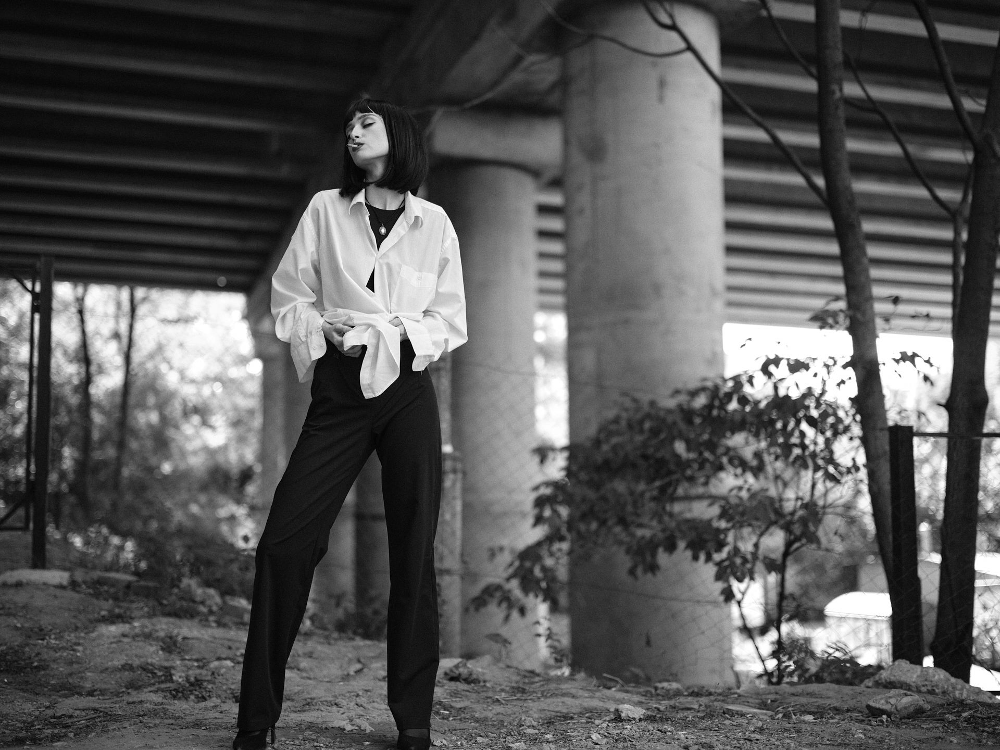

About
I am a Moldovan actress, pianist, and model based in Chișinău.
I study Classical Piano Performance at AMTAP and work across film, music, and fashion.
In 2026, I made my screen debut in Transit Times.

Appearance
Height — 177 cm
Playing Age — 18–25
Hair — Red
Eyes — Green
Nationality — Moldovan
Based in — Chișinău, Moldova
Languages
Russian
Romanian
English
Skills
Acting • Classical Piano • Modeling • Stage Performance • Improvisation • Dance • Swimming • Public Speaking
Filmography
Transit Times (2026)
Role — Eva
Director — Ana-Felicia Scutelnicu
Festival — Munich International Film Festival
Music
Epic Symphonic
Festival „Te Salut, Chișinău” (2025)
Chișinău, Moldova
Pianist
Chișinău City Day Celebration (2025)
Chișinău, Moldova
Pianist
International Music Festival „Mărțișor” (2026)
National Palace „Nicolae Sulac”, Chișinău, Moldova
Pianist
"Dulce-i vinul" — Pasha Parfeni
Actress, Music Video


Modeling
Gallery
Moments
Get in touch
Let's work together

Arina Mura
Actress · Pianist · Model